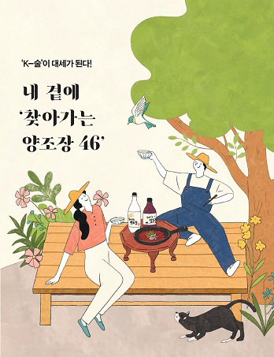

‘K-술’ 맛을 누가 따라오랴!
한번 K-술을 맛본 사람은 여지없이 그 술맛을 못 잊어 다시 찾게 마련이다. 우리 술에 대한 철학과 열정으로 술을 빚는 사람들이 찾아가는 양조장의 대표들이다. 그런 이들이 가꾼 양조장은 하나같이 남다르고 그 자체로 멋이 난다. 그래서 그럴 것이다. 탁주, 소주, 증류주 등 같은 장르 안에 있어도 술 향과 맛이 오묘히 다른 이유도. 이러한 술을 ‘K-술’이라고 부르면 어떨까. 이들 양조장은 오직 전통에만 사로잡히지도 않는다. 집안에 전해지던 고문헌 속에서 술 빚는 방법을 찾아낸 양조장도 있고, 자신만의 창의적인 기술을 더해 술을 빚는 양조장도 있다. ‘천재는 노력하는 사람을 못 이기고, 노력하는 사람은 즐기는 사람을 못 이긴다’는데 즐기고, 치열하게 노력한 ‘K-술’ 맛을 누가 따라오랴!
start
찾아가는 양조장
sect1


찾아가는 양조장은
농림축산식품부와 한국농수산식품유통공사가 양조장의 환경개선, 품질관리, 체험 프로그램 개선, 홍보 등을 종합적으로 지원하여 체험·관광이 결합된 지역 명소로 육성하는 사업이다. 지자체의 심사를 거쳐 추천된 양조장을 대상으로 양조장의 역사성, 지역사회와의 연계성, 관광요소, 경영자의 의지 등을 종합적으로 평가해 대상 양조장을 선정한다. 2022년 4군데 양조장이 새로 선정되어 모두 50개가 되었다.
sect2
sect3


sect4
